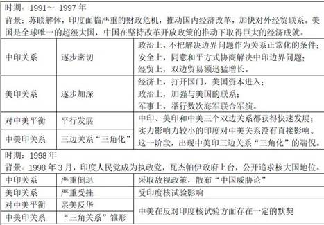
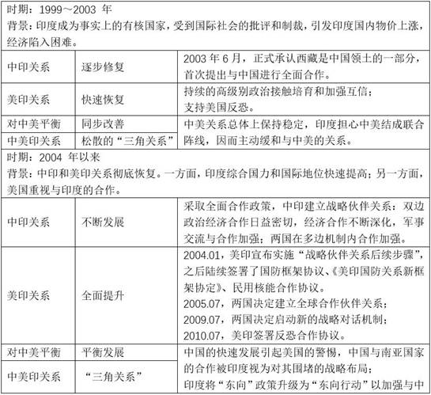
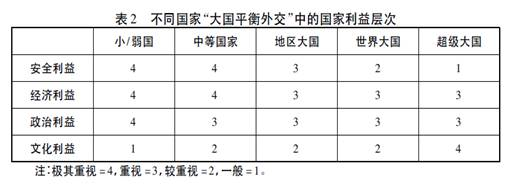
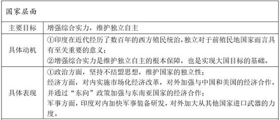
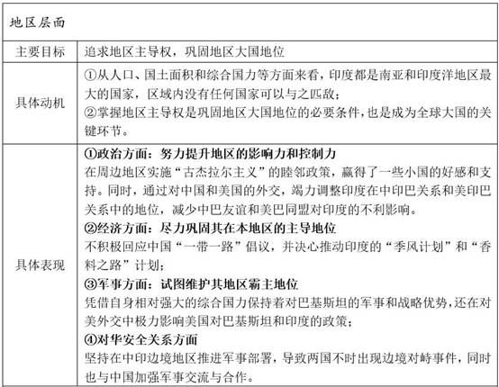
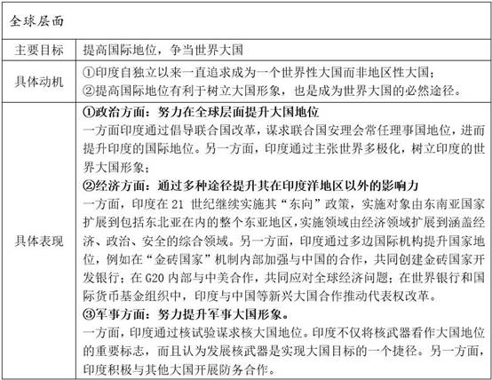

收录于合集
简
孙西辉
中国社会科学院亚太与全球战略研究院博士后
金灿荣
中国人民大学国际关系学院副院长、教授、博士生导师
【摘要】从理论的角度看，地区大国的“大国平衡外交”有自身的机理和特点。从现实的角度看，冷战结束以来，作为地区大国的印度对中美实施“大国平衡外交”经历了四个发展阶段，三国间的关系逐渐由三边关系演变为“三角关系”。追求真正的大国地位是印度外交的根本目标，“同心圆外交”是其主要特点。印度实施中美“大国平衡外交”的动机与此相符，也有基于国家利益的特定目标。此外，印度实施中美“大国平衡外交”具备特定的国内外条件。地区大国的“大国平衡外交”机理和印度的实践，对于中国外交具有重要的启发意义。
【关键词】地区大国 大国平衡外交 印度 中美
印度的中美“大国平衡外交”
从现实的角度看，在冷战后美国“一超独霸”的世界，随着中国实力和地区影响力的增强，中国周边国家大都倾向于对中美实施“大国平衡外交”，印度也不例外。 作为印度洋地区的大国，印度不仅希望在本地区具有决定性影响，而且渴望走向印度洋并成为一个真正的全球大国。从发展演变的角度看，印度独立以来的外交具有明显的阶段性。学术界有“四分”和“三分”等不同的观点，本文认为印度外交可分为三个时期，即以理想主义为主的时期（1947～1962 年）、以现实主义为主的时期（1962～1991年）和以实用主义为主的时期（1991年至今）。其中，印度在第三个时期开始对中美实施“大国平衡外交”，它可进一步划分为四个发展阶段，三国之间的关系也逐渐由三边关系向“三角关系”演变（见表1）。
表1 冷战结束以来印度对中美的“大国平衡外交”（编辑根据文章总结）


印度实施“大国平衡外交”的动机
众所周知，国家利益是对外政策与战略的最高准则，对外政策与战略的根本目的是维护国家利益。地区性大国的“大国平衡外交”政策也不例外，根本目标是最大限度地维护本国利益。 然而，关于国家利益有两点需要说明：一是国家利益涵盖不同的领域并具有相应的层次; 二是地区性大国的“大国平衡外交”在维护国家利益方面有优先而具体的层次或领域。 笔者赞同一些学者将国家利益区分为国内政治领域和国际政治领域两个概念的观点，本文所指的是国际政治领域的国家利益问题，意为有利于国家生存和发展的物质与精神收益，包括安全利益、政治利益、经济利益和文化利益。国家利益按照优先程度分别为安全利益、政治利益、经济利益和文化利益，但不同国家之间或同一国家在不同时期优先追求的国家利益层次有所不同。对于地区大国而言，尽管与周边国家相比具有较强的实力，但与世界性大国和超级大国相比仍有很大差距，通常更重视国家的政治利益、安全利益和经济利益(见表2) 。印度外交符合这一规律，但也有自身特点。

从实施领域的角度看 ，印度外交战略常被称为“同心圆外交”。例如：美国学者乔治·坦纳姆认为，最内层的圆是印度本身；中间层的圆包括印度及其邻近小国，如斯里兰卡、孟加拉国和马尔代夫；最外层的圆包括巴基斯坦、中国、苏联和整个世界。印度学者拉贾·莫汉认为，第一个圆是印度的近邻；第二个圆是包括亚洲、印度洋沿岸国家在内的所谓的“大周边”；第三个圆是全球范围。这种以印度为核心的大国思想有深刻的外交思想根源，主要是以考底利耶(Kautilya)及其著作《政事论》为代表的印度现实主义思想传统。《政事论》分析的核心问题是“力争胜利的国王”（vijigishu）在其所处的“曼荼罗”（mandala）中居中心位置，其国家被一系列盟友、敌国和中立国环绕。一方面，国家间的敌友关系交错排列。居于中心位置的国家的近邻通常是其敌国，近邻之外的邻国很可能是核心国的友邦，友邦外部可能又是一些不友好的国家。莫德尔斯基将考底利耶的“曼荼罗”概念视为“国际社会的萌芽”，并将其称为“棋盘模式（a checkerboard model），因为其基本命题是邻国的敌人是朋友”。另一方面，由于领土规模对于国家安全具有重要意义，统治者的目标是通过牺牲他国利益加强本国力量，因而国家间的关系并非固定不变。
上述思想对印度开国总理尼赫鲁产生了深刻影响，他在写给女儿英迪拉的私人信件及其著作中多次提及考底利耶的影响。基于此，尼赫鲁坚持要将印度建成一个真正的大国。在印度即将独立时，他曾表示，“我认为将来会建立一个联邦，其中包括中国和印度，缅甸和锡兰，阿富汗和其他国家。”他甚至提出，“印度以它现在所处的地位，是不能在世界上扮演二等角色的。要么就做一个有声有色的大国，要么就销声匿迹。中间地位不能引动我。我也不相信任何中间地位是可能的。”上述言论至少反映了尼赫鲁的两种外交思想倾向: 一是尼赫鲁欲将印度建成大国的思想；二是尼赫鲁将周边区域视为印度范围的沙文主义思想。实际上，追求大国目标不仅反映在尼赫鲁的外交政策中，也影响了其后的印度外交政策。印度总理古杰拉尔指出，“贾瓦哈拉尔·尼赫鲁的远见遗赠给了印度外交政策的主要范例。我们的任务是其与正在出现的情形联系起来。”因此，成为“有声有色的大国”是印度外交的根本目标，“同心圆外交”是其主要特点。印度实施中美“大国平衡外交”的动机与此相符，也有基于国家利益的特定目标。（具体详见表3）
表3 具体的印度中美“大国平衡外交”（编辑根据文章总结）



印度实施“大国平衡外交”的条件
在国际上，各国可以通过多种方式保障本国安全与发展，如依靠自身力量的自助、凭借大国保证的中立、与其他国家联盟、依附于大国或保持在各国间的平衡等。与小/弱国家相比，地区大国具有较强的实力，通常会有较高的理想或目标，而非仅仅维持国家生存。然而，面对超级大国或世界性大国，地区大国显然在实力上处于劣势，因而也需要借助某些外交策略或手段实践“大国平衡外交”。可以说，“大国平衡外交”是地区大国实现本国抱负的一个重要途径，但实施这种外交需要一些必要条件。
从理论的角度看，地区大国实施“大国平衡外交”至少需要具备三个国内必要条件。一是具有大国理想和抱负。 作为地区大国，意味着它在本地区具有相对于其他国家的绝对优势，理论上是本地区的霸权国。如果该地区大国没有大国理想或抱负，其政治地位很可能与小/弱国家没有太大差别，在实施“大国平衡外交”时的最高政治目标只能是维护国家独立。 二是具有“制衡”超级(世界性)大国的手段。 由于拥有大国理想或抱负，地区大国在实施“大国平衡外交”时必然追求相对平等的身份和地位，这就需要具有能够“制衡”超级（世界性）大国的手段，从而提高自身在“大国平衡外交”中的地位。这些手段是多种多样的，可能包括独特的战略地位优势、相对可靠的核威慑能力、超乎寻常的资源优势、与其他大国的联盟关系等。 三是领导人的坚定与灵活。 鉴于大国目标和实力地位的矛盾，地区大国追求以平等地位实施“大国平衡外交”并不容易，常常面临超级（世界性）大国的强势压制甚至威胁，这需要地区大国领导人具备坚定信念和不屈从于大国的意志。同时，地区大国的领导人还应具有灵活的外交手段，恰当把握强硬与妥协的程度和时机，否则容易导致与大国的关系彻底恶化。
从理论的角度看，地区大国实施“大国平衡外交”也至少需要具备三个国际必要条件。一是存在两个及两个以上的大国。 只有出现两个或两个以上超级(世界性) 大国，地区大国才有可能实施“大国平衡外交”。 二是两个大国之间存在一定程度的竞争或对抗关系。 对于地区大国而言，超级(世界性)大国之间激烈争斗或关系密切，都不利于它们从中渔利，甚至会造成其利益受损。只有两个超级(世界性)大国保持一定程度的竞争或对抗，地区大国才可能通过维持不“选边”的相对平衡最大限度地维护本国利益。 三是超级(世界性)大国对地区大国的克制态度/政策。 相对于地区大国，超级(世界性)大国具有更大的政策自由空间，可以采取对地区大国友好/敌视、接触/孤立等态度或政策。只有超级(世界性)大国对地区大国保持克制的态度或政策，地区大国才可能具有实施“大国平衡外交”的可能。
从实践角度看，印度实施“大国平衡外交”的国内条件包括: 一是追求真正的大国地位。 如前所述，印度的大国理想源自尼赫鲁时期，但其后的历届政府都坚持这一宏大抱负，只是方式有所不同。冷战结束后，印度依然追求大国目标，但外交方式有所变化。基于大国理想，印度外交更加务实，常常通过“借力打力”的方式“对冲”其他大国的影响力，从而得以在中美之间实施“大国平衡外交”。 二是战略位置和核武器。 印度是一个地区大国，但也有“制衡”超级(世界性) 大国的手段。一方面，印度地处南亚次大陆中心，背靠喜马拉雅山脉，面向印度洋，德干半岛伸向印度洋深处，扼守印度洋航线的东西通道，具有极为重要的战略地位。同时，印度洋西北方向的波斯湾沿岸是全球石油储量和产量最大的地区，包括中国在内的东亚国家的绝大多数石油进口和商品出口需要经过印度洋。在这种情况下，具有较强实力的印度拥有天然的地缘优势，这也成为它“制衡”中美的手段之一。另一方面，印度自1998 年核试验之后成为事实上的有核国家，初步具备了核威慑能力。同时，印度近年来在导弹研发方面不断取得进步，具备了有效核威慑的能力，拥有了另外一个“制衡”其他大国的手段。 三是坚定而灵活的策略。 印度是一个地区大国，有一定的实力但与超级(世界性) 大国相比仍有差距，在对中美实施“大国平衡外交”时既坚持自己的既定目标，也会采取较为灵活的策略。例如，为了发展核武器，印度不惜对美国使用欺骗手段，并将核试验的责任归结为中国威胁，造成中印关系恶化，不久后印度转变对华态度并调整对华政策，使中印关系缓和。同时，印度通过高级别会谈逐步与美国建立了互信，改善美印关系的同时促使美国调整了对巴基斯坦和印度的政策。
从实践角度看，印度实施“大国平衡外交”的国际条件包括：一是中美是“印太地区”影响力最大的两个国家。 随着中国经济持续快速发展，中国在印度洋地区的利益不断扩展，与印度洋国家的合作日益深化，地区影响力持续增加。美国是全球唯一超级大国，在波斯湾周围驻扎第五舰队，在印度洋拥有迪戈加西亚军事基地，是印度洋地区真正的霸主。中美两个大国的存在，是印度得以实施“大国平衡外交”的必要前提。 二是中美存在竞争和矛盾。 作为世界性大国和超级大国，中美之间的关系十分复杂，不仅存在密切的合作和相互依存关系，也存在竞争和矛盾。除了经贸领域之外，中美更重要的竞争处于战略层面，主要原因是两国实力对比的消长。 三是中美对印度的接触政策。 中国坚持和平发展的道路，对周边国家奉行睦邻、安邻、富邻的外交方针。在这种外交政策的指导下，中国与印度的合作不断深化，并从经济领域延伸到防务领域。冷战后，美国开始调整南亚政策，重视地区安全稳定，防止核扩散，防止地区战争，对印度采取接触与平衡政策。“九一一”事件之后，美国与印度的合作不断加强。全球金融危机以来，美国在许多领域给予印度支持。可以说，正是因为中美对印度实行接触与合作而非敌视与对抗的政策，才使得印度可以不断地平衡与中美两个大国的关系。
注释略，详见原文。本文有删节和改动。
文章来源： 《南亚研究》2017年第2期
筛选：冯甜恬 编辑：ササ **** 米金金
轻点下方广告支持我们
我们将更好地为您呈现精彩内容！